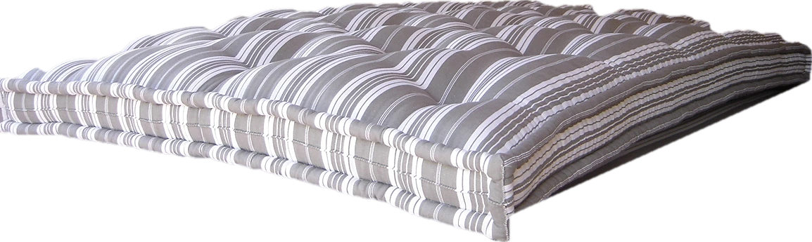
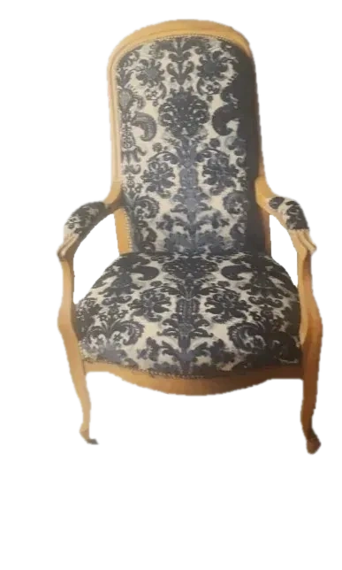
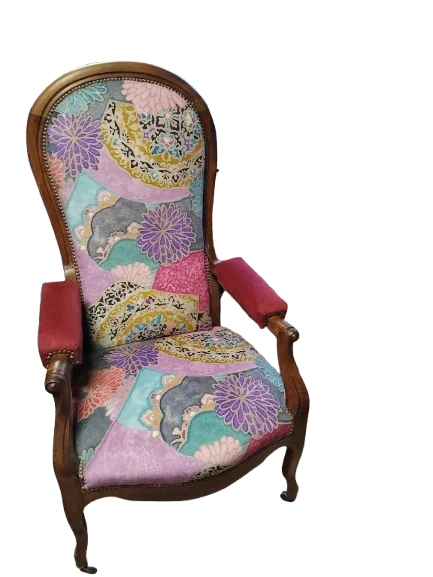
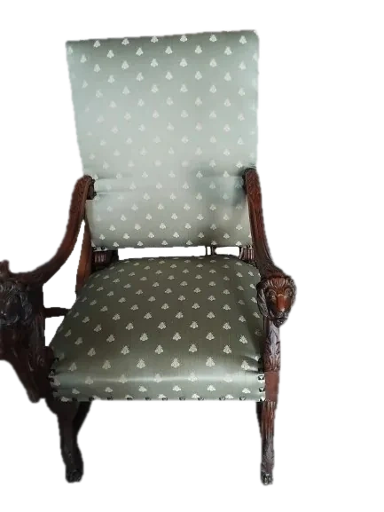
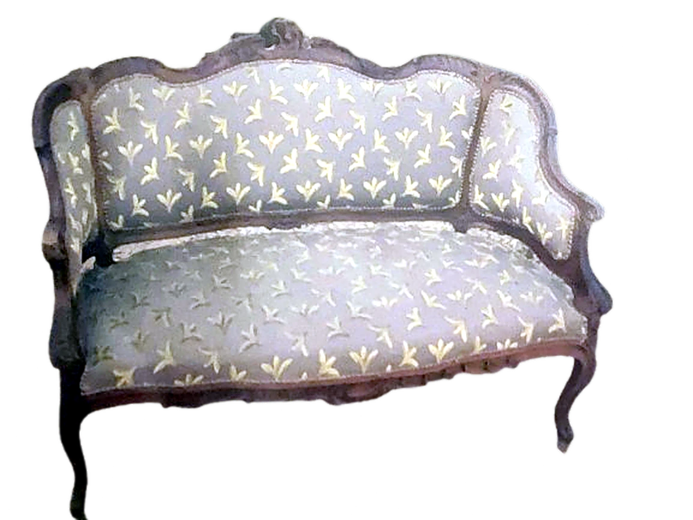

Galerie photos
Découvrez quelques-unes de nos réalisations : fauteuils, canapés et sièges restaurés avec passion.








Découvrez quelques-unes de nos réalisations : fauteuils, canapés et sièges restaurés avec passion.




